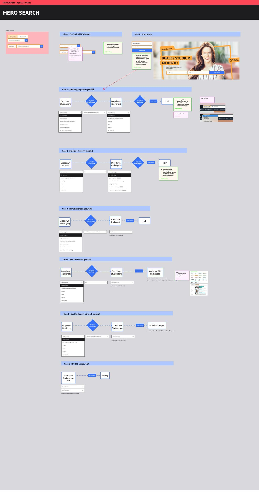
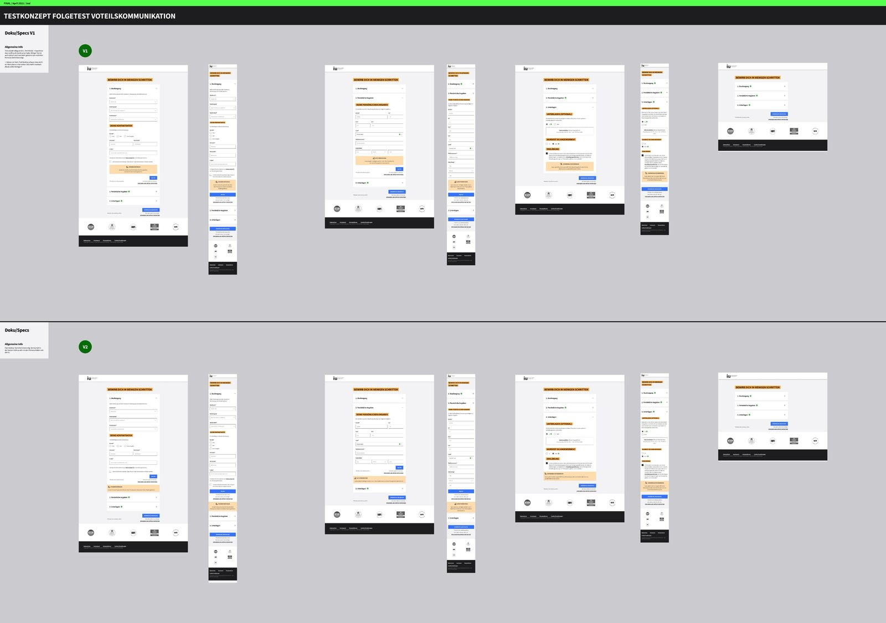
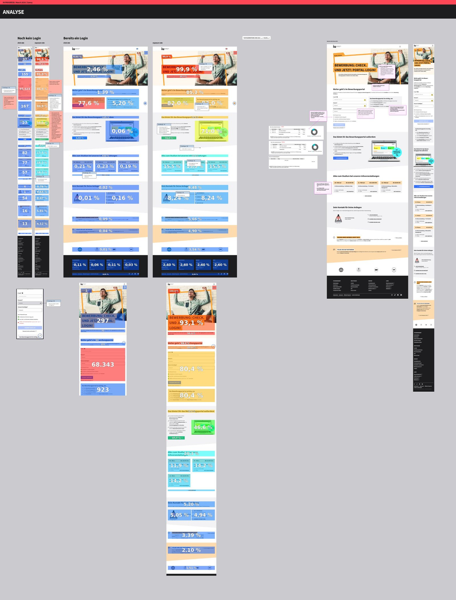
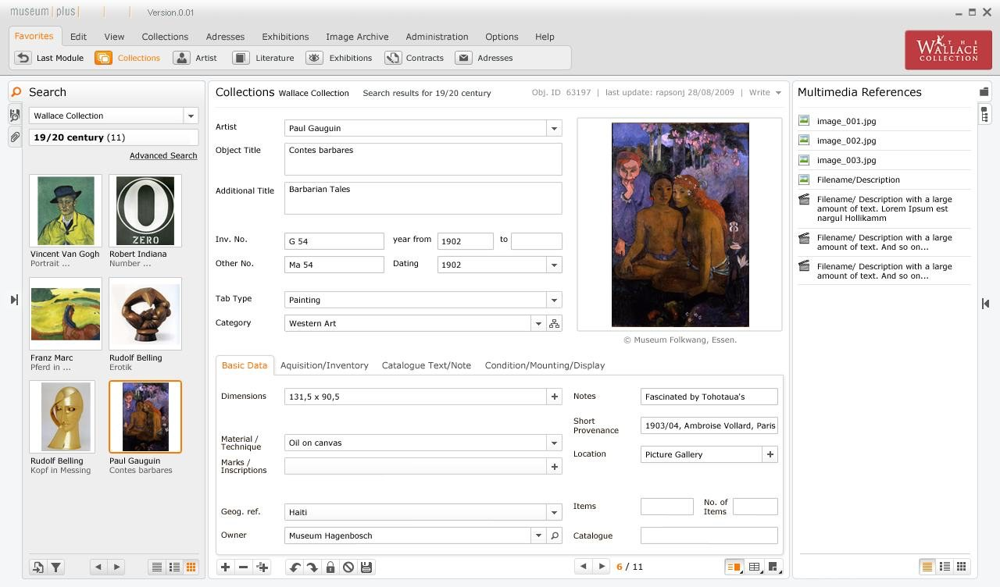
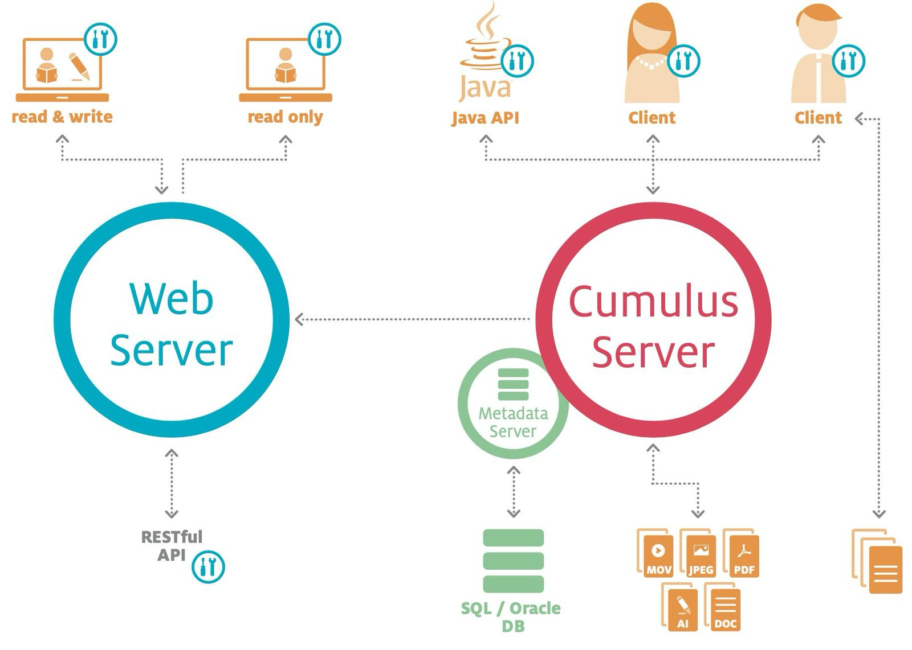
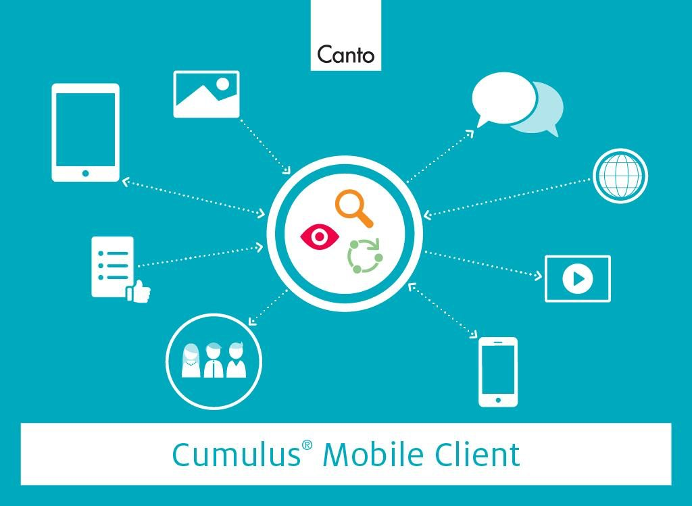
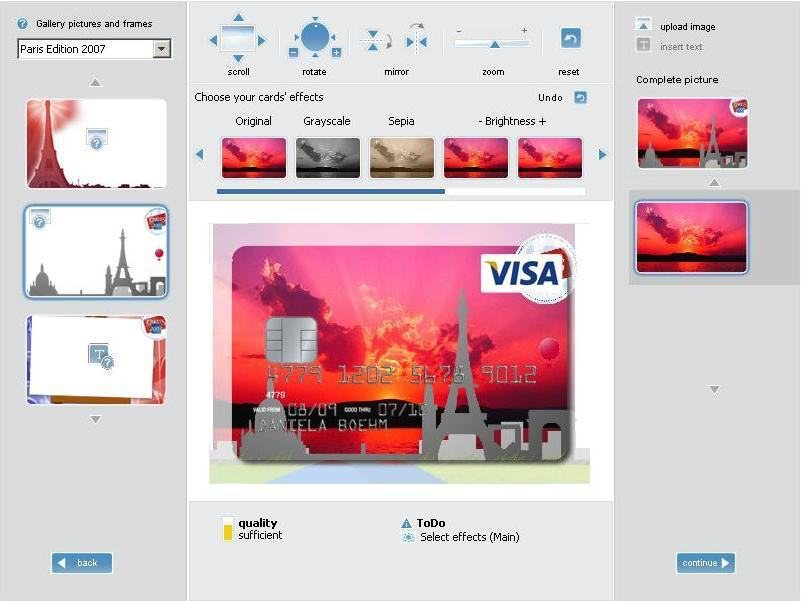

Websites, applications and interfaces from before the AI work, shown as visuals rather than cases. Design at scale for IU’s pre-enrolment websites, and freelance and agency work for software companies.
IU International University · 2019 – 2024Pre-enrolment websites: information architecture rebuilt, UI redesigned, design system governance and continuous A/B testing across the study-programme pages.

IU International University · 2019 – 2024Hero and search flow for the programme finder, every state drawn before build.

IU International University · 2019 – 2024Mobile wireframes for the enrolment funnel: the same content, one decision per screen.

IU International University · 2019 – 2024Programme and landing pages on desktop and mobile after the redesign.

Zetcom AG · freelance · 2010Museum collection management system: UI design for a dense, expert-facing application.

Canto · freelance · 2009 – 2014Cumulus digital asset management: system diagrams and UI, made readable for buyers and admins.

Canto · freelance · 2009 – 2014Cumulus mobile client: key visual and interface illustration.Just Imagine for Auriga Credit Network · 2011 – 2012Corporate website UI for an international credit-management network.

Jenomics for Giesecke & Devrient · 2007 – 2008Card-design applet: a self-service flow to design your own payment card, from picture to print.